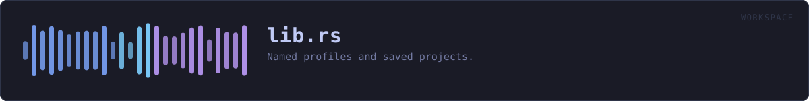

crates/veilvoice-workspace/src/lib.rs
veilvoice-workspace · 819 lines · read the source here · or on GitHub
Named profiles and saved projects.
Two things, which sound alike and are not:
- A
Profileis a way of working, a named set of settings you can switch to. "Anonymise one person, as thoroughly as this can." "A group, everybody the same voice." Three are built in and you can save your own. - A
Workspaceis one piece of work: which recording, which plan, who is in it and what they are called, and the profile it was done under. Saved beside the recording, so opening it a week later puts everything back where it was.
Why a project file is worth having here in particular
Setting up a group recording is a dozen small decisions: who is in it, what each is called, what colour each is drawn in, whether they share a voice. Getting halfway through and having to stop is ordinary. Losing all of it because the window was closed is not, and it is worse than usual here, because the recording may be the only copy of something that cannot be made again.
Plain text, and the same shape as a plan
VEILWORK1, then one key value per line. The same format veilvoice-conversation uses for a plan, for the same reasons: it is readable, diffable, greppable, and has no syntax in which something surprising can hide. A project file is a description of your work; it should not require this program to read it.
What a project file does not contain
No audio and no passwords. It records the path to a recording, not the recording, and nothing about how anything is encrypted. A workspace is a thing you might send somebody so they can set their machine up the same way; if it carried a passphrase, sending it would be handing over the recordings too, and people would find that out afterwards.
Speaker names are in it, because the whole point is to put them back, and a name is a name. The file says so.
In plain words
This is the "save my project" and "load my setup" part.
Profiles are named ways of working you can flip between: one for anonymising a single person as thoroughly as possible, one for a group where everybody keeps their own disguised voice, one for a group where everybody sounds identical and only the names tell you who is speaking.
A project file remembers the rest: which recording you were working on, who is in it, what you called them and what colour each one is. Open it next week and everything is where you left it.
It does not contain the recording itself and it does not contain any password. It does contain the names you typed, because putting those back is the point of it.
WHAT THIS FILE CONTAINS
819 lines defining 13 functions (9 public), 4 types and 5 constants. Everything below is read out of the source, so it cannot disagree with the code.
The types it owns.
enum Errorline 72 · Something that could not be read.struct Profileline 98 · A named way of working.struct Memberline 211 · One person in a saved project.struct Workspaceline 220 · One piece of work, saved.
What happens when it runs. These are the ways in: public, and nothing else in this file calls them, so they are what an outside caller reaches first.
Profile::applied_toline 127 · The engine settings this profile asks for, over a starting point.profileline 200 · The profile with this identifier.Workspace::loadline 414 · Read a project file.
reachesparse,new,take_token,default_profileWorkspace::saveline 421 · Write a project file, creating the directory if needed.
reachesto_text,one_lineWorkspace::profileline 441 · The profile this project names, if this build has it.
WHAT CALLS WHAT
The functions this file defines, and the calls between them. An edge means the callee's name appears, called, inside the caller's body. This is a syntactic reading, not a type-resolved one.
The same graph as Mermaid source
%%{init: {"theme":"base","themeVariables":{"background":"#1a1b26","primaryColor":"#1f2335","primaryTextColor":"#c0caf5","primaryBorderColor":"#7aa2f7","secondaryColor":"#16161e","tertiaryColor":"#16161e","lineColor":"#737aa2","textColor":"#c0caf5","mainBkg":"#1f2335","nodeBorder":"#7aa2f7","clusterBkg":"#16161e","clusterBorder":"#2f3549","fontFamily":"ui-monospace, SFMono-Regular, Consolas, monospace","fontSize":"14px"}}}%%
flowchart TD
n_fmt["Error::fmt<br/>line 80"]
n_applied_to(["Profile::applied_to<br/>line 127"])
n_profile(["profile<br/>line 200"])
n_default_profile["default_profile<br/>line 205"]
n_new["Workspace::new<br/>line 239"]
n_to_text["Workspace::to_text<br/>line 253"]
n_parse["Workspace::parse<br/>line 316"]
n_load(["Workspace::load<br/>line 414"])
n_save(["Workspace::save<br/>line 421"])
n_profile(["Workspace::profile<br/>line 441"])
n_take_token["take_token<br/>line 450"]
n_one_line["one_line<br/>line 463"]
n_path_text["path_text<br/>line 468"]
n_load --> n_parse
n_new --> n_default_profile
n_parse --> n_new
n_parse --> n_take_token
n_path_text --> n_one_line
n_save --> n_to_text
n_to_text --> n_one_line
click n_fmt href "https://github.com/tilas01/veilvoice/blob/main/crates/veilvoice-workspace/src/lib.rs#L80" "open the source"
click n_applied_to href "https://github.com/tilas01/veilvoice/blob/main/crates/veilvoice-workspace/src/lib.rs#L127" "open the source"
click n_profile href "https://github.com/tilas01/veilvoice/blob/main/crates/veilvoice-workspace/src/lib.rs#L200" "open the source"
click n_default_profile href "https://github.com/tilas01/veilvoice/blob/main/crates/veilvoice-workspace/src/lib.rs#L205" "open the source"
click n_new href "https://github.com/tilas01/veilvoice/blob/main/crates/veilvoice-workspace/src/lib.rs#L239" "open the source"
click n_to_text href "https://github.com/tilas01/veilvoice/blob/main/crates/veilvoice-workspace/src/lib.rs#L253" "open the source"
click n_parse href "https://github.com/tilas01/veilvoice/blob/main/crates/veilvoice-workspace/src/lib.rs#L316" "open the source"
click n_load href "https://github.com/tilas01/veilvoice/blob/main/crates/veilvoice-workspace/src/lib.rs#L414" "open the source"
click n_save href "https://github.com/tilas01/veilvoice/blob/main/crates/veilvoice-workspace/src/lib.rs#L421" "open the source"
click n_profile href "https://github.com/tilas01/veilvoice/blob/main/crates/veilvoice-workspace/src/lib.rs#L441" "open the source"
click n_take_token href "https://github.com/tilas01/veilvoice/blob/main/crates/veilvoice-workspace/src/lib.rs#L450" "open the source"
click n_one_line href "https://github.com/tilas01/veilvoice/blob/main/crates/veilvoice-workspace/src/lib.rs#L463" "open the source"
click n_path_text href "https://github.com/tilas01/veilvoice/blob/main/crates/veilvoice-workspace/src/lib.rs#L468" "open the source"
classDef entry fill:#1f2335,stroke:#7aa2f7,color:#c0caf5
class n_applied_to,n_profile,n_load,n_save,n_profile entry
classDef api fill:#1f2335,stroke:#7dcfff,color:#c0caf5
class n_default_profile,n_new,n_to_text,n_parse api
classDef helper fill:#1f2335,stroke:#bb9af7,color:#c0caf5
class n_fmt,n_take_token,n_one_line,n_path_text helperThis site loads no third-party script, so it cannot run Mermaid; the diagram above is the same nodes and edges drawn by the generator instead. GitHub renders the source below directly.
ITEMS
| Item | Line | Documentation |
|---|---|---|
MAGIC const | 68 | The first line of a project file. |
Error pub enum | 72 | Something that could not be read. |
Error::fmt fn | 80 | |
Profile pub struct | 98 | A named way of working. |
Profile::applied_to pub fn | 127 | The engine settings this profile asks for, over a starting point. |
INDIVIDUAL pub const | 136 | Anonymise one person, with everything this engine has turned on. |
GROUP_VOICES pub const | 154 | A group, each person with their own disguised voice. |
GROUP_ONE_VOICE pub const | 172 | A group where nobody can be picked out by sound at all. |
BUILT_IN pub const | 193 | The profiles that ship, in the order a picker shows them. |
profile pub fn | 200 | The profile with this identifier. |
default_profile pub fn | 205 | The profile a fresh install starts in. |
Member pub struct | 211 | One person in a saved project. |
Workspace pub struct | 220 | One piece of work, saved. |
Workspace::new pub fn | 239 | A new, empty project under the default profile. |
Workspace::to_text pub fn | 253 | Serialise to the text format. |
Workspace::parse pub fn | 316 | Parse the text format. |
Workspace::load pub fn | 414 | Read a project file. |
Workspace::save pub fn | 421 | Write a project file, creating the directory if needed. |
Workspace::profile pub fn | 441 | The profile this project names, if this build has it. |
take_token fn | 450 | The first whitespace-delimited token, and everything after it. |
one_line fn | 463 | A value with no line break in it. |
path_text fn | 468 | A path as one line, with Windows separators normalised. |